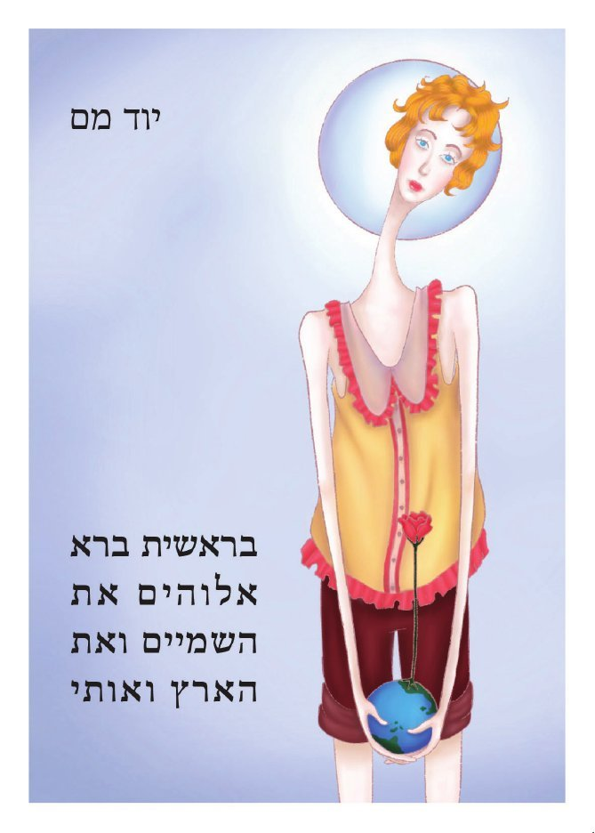
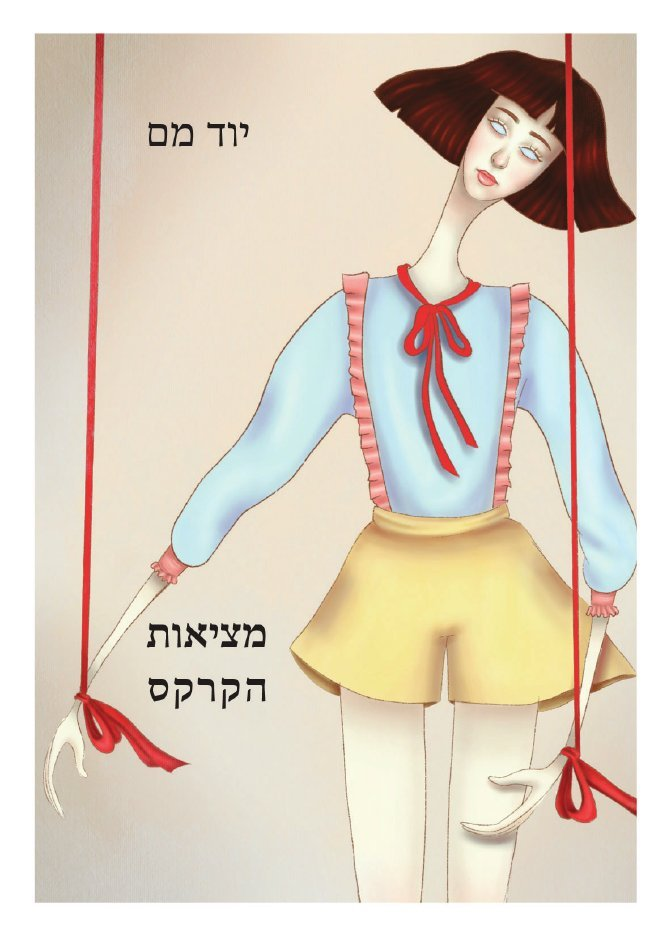

אלוהים אני אוהב
אלוהים אני אוהב
אותך אבל זה
היה אתה או
אני.

ירושלים, הסגר השלישי, והטבק אזל. אדם יוצא לרחוב אחרי פרידה ומוצא עיר שכל הבנות המתוקות שלה ברחו לתל אביב. חרדי צעיר מבטיח לו שהקורונה תיגמר בסוף החודש, והכל פה פיק ביזרעל: החיים, הקפה, הממשלה. אלהים ברא את השמים ואת הארץ ואותו, ואמר משהו שהדובר שכח. בין בית שהתפרק, ילד שאבד את הבית ופצע בלב שלא מתרפא, הצחוק יודע בדיוק איפה כואב. כל הספר הוא ניסיון להיזכר.

אדם מתעורר בארבע לפנות בוקר, שומע מוזיקה באוזניות, מעשן, ויוצא אל אלנבי, מלא חמלה וחסד כלפי העולם ובריותיו. הלשון היא לשון המקרא, והעיר היא תל אביב. אישה חולפת, תיק נופל, ושניהם רואים אותו אחרת. הדובר טובל בבוקר במקווה, וכשהאדם מתאהב הוא נמלט מכוח המשיכה. חיים קטנים שנכתבו כאילו היו ספר קודש, ושואלים אם יש בהם קדושה. הירח מלא, ואת חסרה.

הספר נפתח בחלום שנמשך כל הנישואין: היא חולמת בהקיץ ושוכחת שהיא חולמת, והוא בודד גם כשיש לידו אנשים. ובבית שהשבת והילדים עזבו נשארים סרדינים מהקופסה ועוגת שוקולד של אמא שאסור לאכול. אריה ונערת קרקס נוסעים מעיר לעיר, והשעון הוא אלהים ואין שען. בסוף נשארת הכרה אחת: אפשר לראות את המציאות מכמה וכמה זוויות, ומזווית הקרקס היא מציאות הקרקס.

שאלה אחת עומדת בראש הספר: מי ירפא את אלהים. הדובר שואל אותה מתוך מבט נבואי, שיר אחר שיר, ממאי עד אוקטובר 2023. לאחר מפגש עם אישה שטענה שהיא אלהים נגלה לו חזון, כחודשיים לפני שבעה באוקטובר: פרות הנלחמות בכבשים, תנין שבולע את כולם, ואלהים היושב על כיסא שנשבר ומצווה אותו לשאת קינה על ירושלים. הוא מפרסם אותו, ואנשים צוחקים עליו. הספר נחתם בשירים שנכתבו ימים ספורים אחרי האסון, שמבקשים ושואפים לנבואה, ובשאלה האחרונה: מה זה סוף.
אלוהים אני אוהב
אותך אבל זה
היה אתה או
אני.
אני יוד מם, משורר מירושלים. כתבתי ארבעה ספרי שירה בעברית: שלושה שיצאו כטרילוגיה, וספר רביעי, שבעה באוקטובר.
היום נמות / אחר כך נחיה / גזע עץ שרוף / בקצה השדה / ילד קטן / שאבד את הבית / ופצע בלב / שלא מתרפא. / הבהובי אור גוועים / במנורה הפשוטה. / היום נמות / אחר כך נחיה
מתוך בראשית ברא אלהים את השמים ואת הארץ ואותי. לשיר בעמוד שלו
כאן אפשר לקרוא שירים שלמים, ולקנות את הספרים בביט.
משלוח 25 ₪ להזמנה, או איסוף עצמי בירושלים. אפשר לשלם בביט או בפייפאל. ב"קנייה מהירה" נפתח חלון עם הסכום וההוראות, ואפשר להעתיק משם את פרטי ההזמנה. ההחזרות והמשלוחים מפורטים בתקנון.
טרילוגיה היא סדרה של שלוש יצירות העומדות בזכות עצמן וקשורות זו לזו. השירים בטרילוגיה נכתבו בין 2020 ל־2022, אבל הם חורגים מגבולות הזמן הזה. הם מספרים על הילדות, הנשואין והגירושין, על החזרה בתשובה ועל החזרה בשאלה, על אהבות שונות ומשונות ועל שיח מתמיד עם אלהים.
הספר הראשון הוא בראשית ברא אלהים את השמים ואת הארץ ואותי. השני הוא הירח מלא ואת חסרה, והשלישי מציאות הקרקס. הספר הרביעי, שבעה באוקטובר ומי ירפא את אלהים, הוא יומן שירה נבואי מ־2023.
אני יוחאי, ומאחורי שם הבמה "יוד מם" אני כותב שירה בעברית. נולדתי בקיבוץ שניר בגליל העליון, ואני גר בירושלים. בימי הקורונה, הסגרים והבדידות, פרץ ממני "יוד מם" והתחיל לכתוב ולכתוב.
את הספרים ערכה ללי מיכאלי, ועריכה נוספת עשה יואב גלבוע בהוצאת קתרזיס. מלבד הספרים אני עושה גרפיטי של השיר הירח מלא ואת חסרה ברחובות ירושלים, ומוזיקה. למוזיקה. עוד עליי ועל הספרים.
האתר "יוד מם שירה עברית חדשה" מכיל את ספרי השירה שלי למכירה, שירים שלמים מתוכם, ודפים על שירה עברית: מהי שירה עברית חדשה, שירה עברית מודרנית, איך קוראים שיר ושאלות ותשובות.
1 מתוך 11